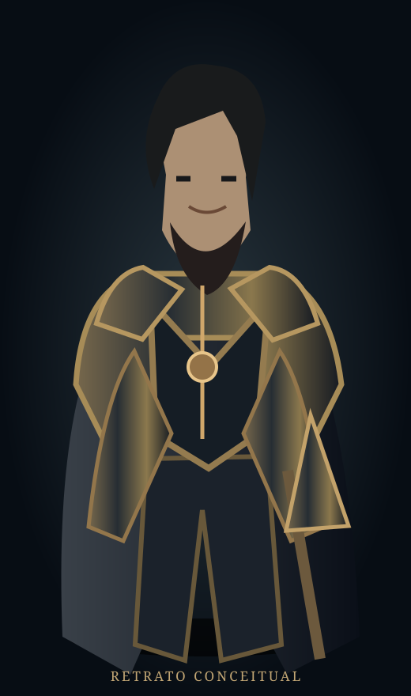

Tharion
ELFO · MAGO · NÍVEL 1
15CA
7/7Pontos de vida
+2Iniciativa
MOCHILA
Selecione um item para consultar suas propriedades. A ficha definitiva usará os dados persistidos no Django e as regras oficiais de D&D 2024.
DETALHES DO ITEM
🛡️
Escudo de madeira
Escudo · Equipamento
+2Bônus de CA
2,7Peso (kg) ilustrativo
Um escudo fornece +2 de bônus à CA enquanto estiver sendo usado, conforme as regras aplicáveis.
Os valores aqui são demonstrativos e precisam ser conferidos com o catálogo do sistema.